オーダー一覧 (11/30更新)
属性： 火 / 水 / 風 / 光 / 闇 / 光闇
攻防： 攻バフ / 防バフ / 攻デバフ / 防デバフ
劣勢時： 旗
属性盾： 火 / 水 / 風
MP系： 軽減 / 回復
補助スキル： 覚醒 / 覚醒妨害
通特盾： 通常 / 特殊
リセット系： オーダー使用回数 / ユニットチェンジ回数
属性攻防： 攻バフ / 防バフ / 攻デバフ / 防デバフ
オーダー時間操作： 加速 / 操り
| 画像 | 課金 | 名前 | 対ヒュージ効果 | 対ヒュージ時間 | レギマ効果 | レギマ時間 |
|---|---|---|---|---|---|---|
| 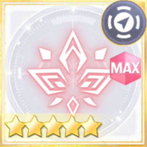 | 火炎の心得 | 火：大増加 | 10+20 | 火：大増加 水被ダメージ増加 |
40+110 | |
| 火烈なる布陣 | 火：特大増加 | 10+20 | 火：特大増加 水被ダメージ増加 |
30+120 | ||
| 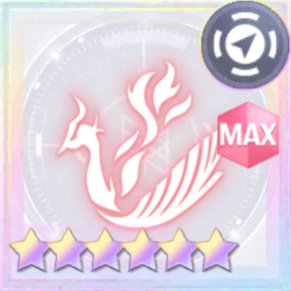 | 〇 | 朱雀炎武 | 火：特大増加 | 10+20 | 火：特大増加 水被ダメージ増加 |
30+120 |
| 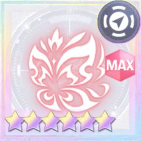 | 〇 | 女帝蝶の火継 | 火：特大増加 ロング |
10+60 | 火：特大増加 水被ダメージ増加 |
30+120 |
| 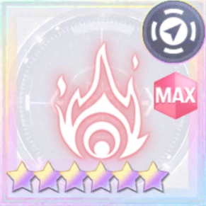 | 焔の勇猛 | 火：特大増加 | 10+20 | 火 通常・後衛：特大増加 火 特殊 ：増加 |
30+120 | |
| 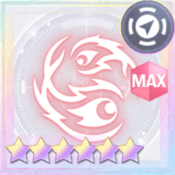 | 〇 | 劫火の勇猛 | 火：特大増加 | 10+20 | 火 通常・後衛：特大増加 火 特殊 ：増加 |
30+120 |
| 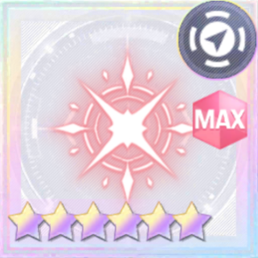 | 輝炎の神秘 | 火：特大増加 | 10+20 | 火 特殊・後衛：特大増加 火 通常 ：増加 |
30+120 | |
| 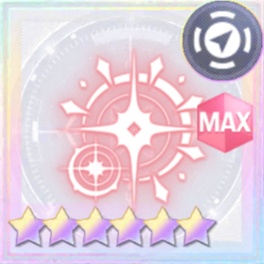 | 〇 | 煌炎の神秘 | 火：特大増加 | 10+20 | 火 特殊・後衛：特大増加 火 通常 ：増加 |
30+120 |
| 流水の心得 | 水：大増加 | 10+20 | 水：大増加 風被ダメージ増加 |
40+110 | ||
 |
氷結の布陣 | 水：特大増加 | 10+20 | 水：特大増加 風被ダメージ増加 |
30+120 | |
| 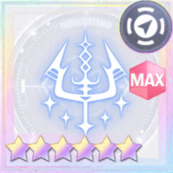 | 〇 | 水神の怒り | 水：特大増加 | 10+20 | 水：特大増加 風被ダメージ増加 |
30+120 |
| 〇 | 天鳴雨の波紋 | 水：特大増加 ロング |
10+60 | 水：特大増加 風被ダメージ増加 |
30+120 | |
| 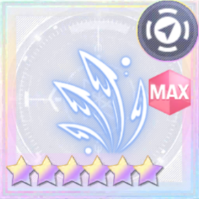 | 大水の勇猛 | 水：特大増加 | 10+20 | 水 通常・後衛：特大増加 水 特殊 ：増加 |
30+120 | |
| 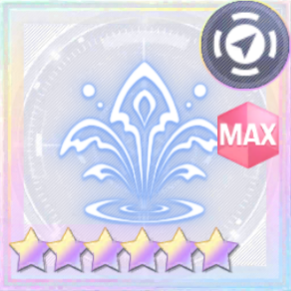 | 〇 | 溟海の勇猛 | 水：特大増加 | 10+20 | 水 通常・後衛：特大増加 水 特殊 ：増加 |
30+120 |
| 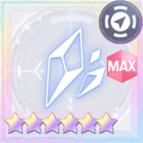 | 氷霧の息吹 | 水：特大増加 | 10+20 | 水 特殊・後衛：特大増加 水 通常 ：増加 |
30+120 | |
| 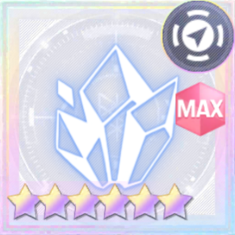 | 〇 | 雪獄の息吹 | 水：特大増加 | 10+20 | 水 特殊・後衛：特大増加 水 通常 ：増加 |
30+120 |
| 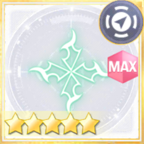 | 疾風の心得 | 風：大増加 | 10+20 | 風：大増加 火被ダメージ増加 |
40+110 | |
| 絶風大破の陣 | 風：特大増加 | 10+20 | 風：特大増加 火被ダメージ増加 |
30+120 | ||
| 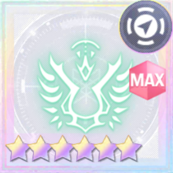 | 〇 | 天翼のしらべ | 風：特大増加 | 10+20 | 風：特大増加 火被ダメージ増加 |
30+120 |
| 〇 | 神渡しの風巻き | 風：特大増加 ロング |
10+60 | 風：特大増加 火被ダメージ増加 |
30+120 | |
| 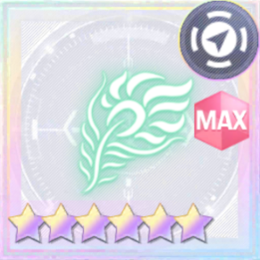 | 羽翼の勇猛 | 風：特大増加 | 10+20 | 風 通常・後衛：特大増加 風 特殊 ：増加 |
30+120 | |
| 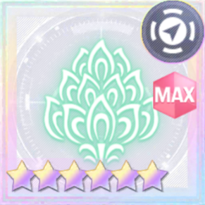 | 〇 | 霊鳥の勇猛 | 風：特大増加 | 10+20 | 風 通常・後衛：特大増加 風 特殊 ：増加 |
30+120 |
| 風薙の神秘 | 風：特大増加 | 10+20 | 風 特殊・後衛：特大増加 風 通常 ：増加 |
30+120 | ||
| 〇 | 裂空の神秘 | 風：特大増加 | 10+20 | 風 特殊・後衛：特大増加 風 通常 ：増加 |
30+120 | |
| 神光の心得 | 光：特大増加 | 10+40 | 光：特大増加 | 30+120 | ||
| 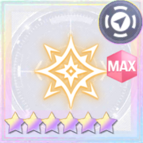 | 〇 | 玲瓏光艶 | 光：特大増加 | 10+40 | 光：特大増加 | 30+120 |
| 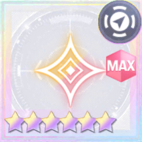 | 極光と陽炎の心得 | 光：特大増加 火：増加 |
10+20 | 光：特大増加 火：増加 |
15+60 | |
| 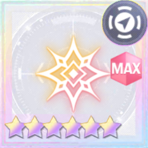 | 〇 | 光背火翼 | 光：特大増加 火：増加 |
10+20 | 光：特大増加 火：増加 |
15+60 |
| 陽光と漣の心得 | 光：特大増加 水：増加 |
10+20 | 光：特大増加 水：増加 |
15+60 | ||
| 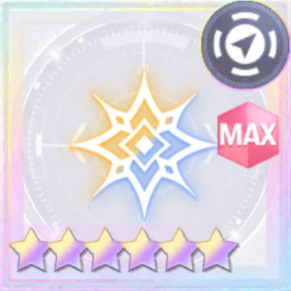 | 〇 | 天光銀波 | 光：特大増加 水：増加 |
10+20 | 光：特大増加 水：増加 |
15+60 |
| 剣光と疾風の心得 | 光：特大増加 風：増加 |
10+20 | 光：特大増加 風：増加 |
15+60 | ||
| 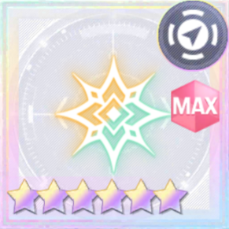 | 〇 | 光華廻風 | 光：特大増加 風：増加 |
10+20 | 光：特大増加 風：増加 |
15+60 |
| 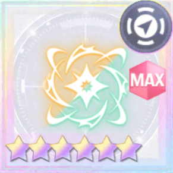 | 〇 | 清暉恒風 | 光風：増加 | 5+80 | 味方前衛ATK/Sp.ATK：特大上昇 | 20+0 |
| 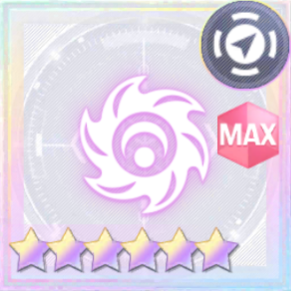 | 宵闇の心得 | 闇：特大増加 | 10+40 | 闇：特大増加 | 30+120 | |
| 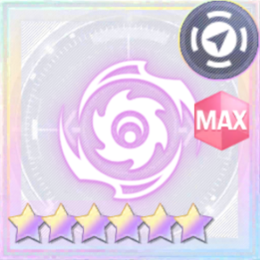 | 〇 | 暗碧無双 | 闇：特大増加 | 10+40 | 闇：特大増加 | 30+120 |
| 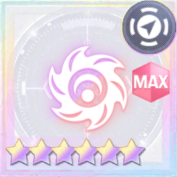 | 漆黒と烈火の心得 | 闇：特大増加 火：増加 |
10+20 | 闇：特大増加 火：増加 |
15+60 | |
| 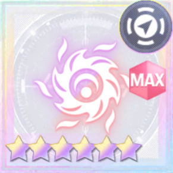 | 〇 | 暗黒業火 | 闇：特大増加 火：増加 |
10+20 | 闇：特大増加 火：増加 |
15+60 |
| 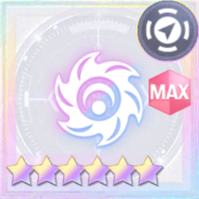 | 石墨と奔流の心得 | 闇：特大増加 水：増加 |
10+20 | 闇：特大増加 水：増加 |
15+60 | |
| 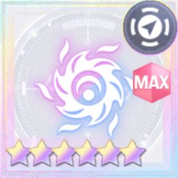 | 〇 | 黒碑水鏡 | 闇：特大増加 水：増加 |
10+20 | 闇：特大増加 水：増加 |
15+60 |
| 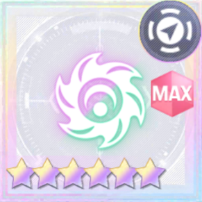 | 深闇と烈風の心得 | 闇：特大増加 風：増加 |
10+20 | 闇：特大増加 風：増加 |
15+60 | |
| 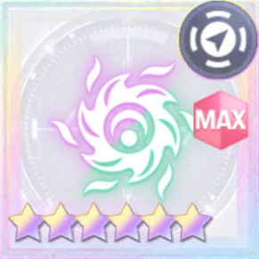 | 〇 | 黒貂威風 | 闇：特大増加 風：増加 |
10+20 | 闇：特大増加 風：増加 |
15+60 |
| 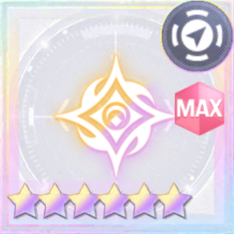 | 光陰の心得 | 光闇：特大増加 | 10+20 | 光闇：特大増加 | 15+60 | |
| 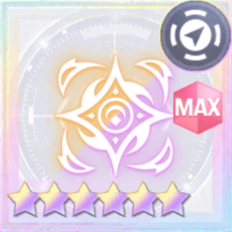 | 〇 | 陰陽二律 | 光闇：特大増加 | 10+20 | 光闇：特大増加 | 15+60 |
| 攻勢強化の剣 | 味方ATK/Sp.ATK：大上昇 | 10+0 | 味方前衛ATK/Sp.ATK：大上昇 | 30+0 | ||
| 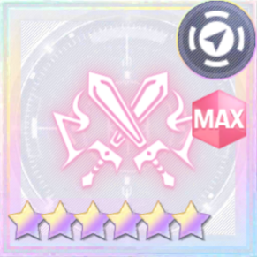 | 攻勢激化の豪剣 | 味方ATK/Sp.ATK：特大上昇 | 10+0 | 味方前衛ATK/Sp.ATK：特大上昇 | 20+0 | |
| 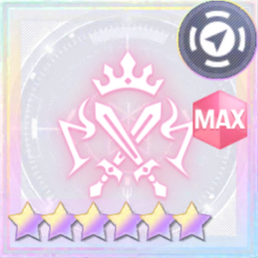 | 〇 | 攻勢激化の聖剣 | 味方ATK/Sp.ATK：特大上昇 | 10+0 | 味方前衛ATK/Sp.ATK：特大上昇 | 20+0 |
| 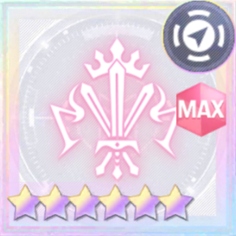 | 〇 | 熾烈攻勢の聖剣 | 味方ATK/Sp.ATK：超特大上昇 | 10+0 | 味方前衛ATK/Sp.ATK：超特大上昇 | 20+0 |
| 守勢強化の盾 | 味方DEF/Sp.DEF：大上昇 | 10+0 | 味方前衛DEF/Sp.DEF：大上昇 | 30+0 | ||
| 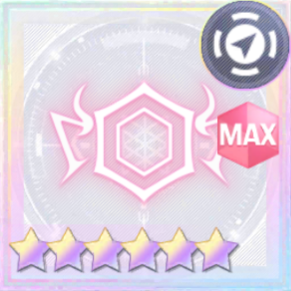 | 守勢強化の壁 | 味方DEF/Sp.DEF：特大上昇 | 10+0 | 味方前衛DEF/Sp.DEF：特大上昇 | 20+0 | |
| 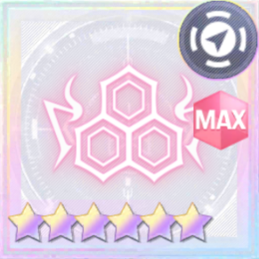 | 〇 | 守勢強化の鉄壁 | 味方DEF/Sp.DEF：特大上昇 | 10+0 | 味方前衛DEF/Sp.DEF：特大上昇 | 20+0 |
| 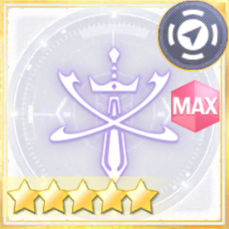 | 刀縛りの蔦 | 敵ATK/Sp.ATK：大減少 | 10+0 | 敵前衛ATK/Sp.ATK：大減少 | 30+0 | |
| 豪剣縛りの蔦 | 敵ATK/Sp.ATK：特大減少 | 10+0 | 敵前衛ATK/Sp.ATK：特大減少 | 20+0 | ||
| 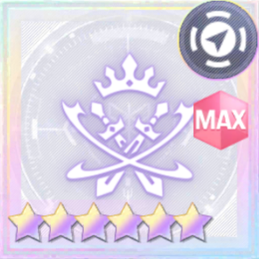 | 〇 | 聖剣縛りの蔦 | 敵ATK/Sp.ATK：特大減少 | 10+0 | 敵前衛ATK/Sp.ATK：特大減少 | 20+0 |
| 敵陣防壁破壊 | 敵DEF/Sp.DEF：大減少 | 10+0 | 敵前衛DEF/Sp.DEF：大減少 | 30+0 | ||
| 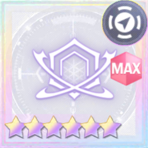 | 敵城防壁破壊 | 敵DEF/Sp.DEF：特大減少 | 10+0 | 敵前衛DEF/Sp.DEF：特大減少 | 20+0 | |
| 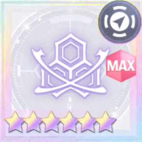 | 〇 | 敵城砦鉄壁破壊 | 敵DEF/Sp.DEF：特大減少 | 10+0 | 敵前衛DEF/Sp.DEF：特大減少 | 20+0 |
| 決死の御旗 | 味方ATK/Sp.ATK：大上昇 | 10+0 | 味方前衛スキル効果：大増加 ※劣勢時のみ |
40+110 | ||
| 不屈の御旗 | 味方ATK/Sp.ATK：特大上昇 | 10+0 | 味方前衛スキル効果：特大増加 ※劣勢時のみ |
30+120 | ||
| 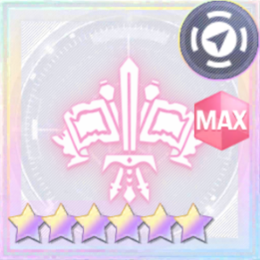 | 〇 | 革命の御旗 | 味方ATK/Sp.ATK：特大上昇 | 10+0 | 味方前衛スキル効果：特大増加 ※劣勢時のみ |
30+120 |
| 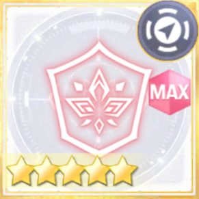 | 火除けの盾 | 味方DEF/Sp.DEF：大上昇 | 10+0 | 敵火：大減少 ※回復を除く ※味方ポイントが敵の1/2以下で即終了 |
30+70 | |
| 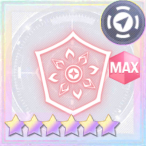 | 火烈の盾 | 味方DEF/Sp.DEF：特大増加 | 10+0 | 敵火：特大減少 ※回復を除く ※味方ポイントが敵の1/2以下で即終了 |
20+100 | |
| 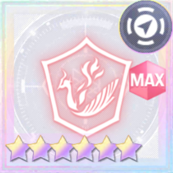 | 〇 | 朱雀の御盾 | 味方DEF/Sp.DEF：特大増加 | 10+0 | 敵火：特大減少 ※回復を除く ※味方ポイントが敵の1/2以下で即終了 |
20+100 |
| 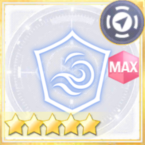 | 水払いの盾 | 味方DEF/Sp.DEF：大上昇 | 10+0 | 敵水：大減少 ※回復を除く ※味方ポイントが敵の1/2以下で即終了 |
30+70 | |
| 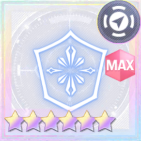 | 氷結の盾 | 味方DEF/Sp.DEF：特大増加 | 10+0 | 敵水：特大減少 ※回復を除く ※味方ポイントが敵の1/2以下で即終了 |
20+100 | |
| 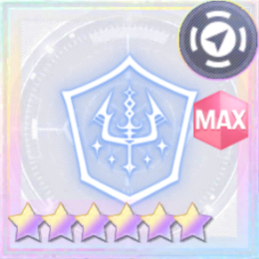 | 〇 | 水神の御盾 | 味方DEF/Sp.DEF：特大増加 | 10+0 | 敵水：特大減少 ※回復を除く ※味方ポイントが敵の1/2以下で即終了 |
20+100 |
| 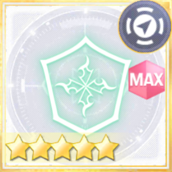 | 風止めの盾 | 味方DEF/Sp.DEF：大上昇 | 10+0 | 敵風：大減少 ※回復を除く ※味方ポイントが敵の1/2以下で即終了 |
30+70 | |
| 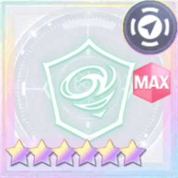 | 絶風の盾 | 味方DEF/Sp.DEF：特大増加 | 10+0 | 敵風：特大減少 ※回復を除く ※味方ポイントが敵の1/2以下で即終了 |
20+100 | |
| 〇 | 天翼の御盾 | 味方DEF/Sp.DEF：特大増加 | 10+0 | 敵風：特大減少 ※回復を除く ※味方ポイントが敵の1/2以下で即終了 |
20+100 | |
| 魔減の展開 | 味方全体消費MP大軽減 | 10+20 | 味方全体消費MP大軽減 | 30+70 | ||
| 〇 | 魔縮領域 | 味方全体消費MP特大軽減 | 10+20 | 味方全体消費MP特大軽減 | 20+80 | |
| 広域魔導強化の陣 | 味方全体MP30%回復 | 15+0 | 味方全体MP30%回復 | 30+0 | ||
| 広域魔導復古の策 | 味方全体MP40%回復 | 15+0 | 味方全体MP40%回復 | 20+0 | ||
| 〇 | 広域魔導凱旋 | 味方全体MP40%回復 | 15+0 | 味方全体MP40%回復 | 20+0 | |
| 前衛魔導強化の陣 | 味方全体MP30%回復 | 15+0 | 味方前衛MP70%回復 | 30+0 | ||
| 後衛魔導強化の陣 | 味方全体MP30%回復 | 15+0 | 味方後衛MP70%回復 | 30+0 | ||
| 覚醒の明星 | 味方ATK/Sp.ATK：大上昇 | 10+0 | 味方全体補助スキル発動率大増加 | 30+70 | ||
| 覚醒の三日月 | 味方ATK/Sp.ATK：特大上昇 | 10+0 | 味方全体補助スキル発動率特大増加 | 20+80 | ||
| 〇 | 覚醒の日輪 | 味方ATK/Sp.ATK：特大上昇 | 10+0 | 味方全体補助スキル発動率特大増加 | 20+80 | |
| 覚醒妨害 | 味方DEF/Sp.DEF：大上昇 | 10+0 | 敵全体補助スキル発動率大減少 残り2分未満で即終了 ※相手が補助スキル発動率上昇オーダー使用時、効果増加 |
30+70 | ||
| 三日月の覚醒妨害 | 味方DEF/Sp.DEF：特大上昇 | 10+0 | 敵全体補助スキル発動率特大減少 残り2分未満で即終了 ※相手が補助スキル発動率上昇オーダー使用時、効果増加 |
20+80 | ||
| 〇 | 日輪の覚醒妨害 | 味方DEF/Sp.DEF：特大上昇 | 10+0 | 敵全体補助スキル発動率特大減少 残り2分未満で即終了 ※相手が補助スキル発動率上昇オーダー使用時、効果増加 |
20+80 | |
| 衝撃返しの盾 | 通常ダメージ大軽減 | 10+20 | 通常ダメージ大軽減 | 30+90 | ||
| 〇 | 衝撃返しの鉄壁 | 通常ダメージ大軽減 | 10+20 | 通常ダメージ大軽減 | 30+90 | |
| 特異返しの盾 | 特殊ダメージ大軽減 | 10+20 | 特殊ダメージ大軽減 | 30+90 | ||
| 〇 | 特異返しの鉄壁 | 特殊ダメージ大軽減 | 10+20 | 特殊ダメージ大軽減 | 30+90 | |
| 回帰の砂時計 | 味方DEF/Sp.DEF：特大増加 | 10+0 | 自身以外味方オーダー回数リセット | 30+0 | ||
| 〇 | 刻戻りのクロノグラフ | 味方DEF/Sp.DEF：特大増加 | 10+0 | 自身以外味方オーダー回数リセット | 30+0 | |
| 広域再編の策 | 味方DEF/Sp.DEF：特大増加 | 10+0 | 味方全体ユニットチェンジ回数リセット | 30+0 | ||
| 〇 | 広域再編の陣 | 味方DEF/Sp.DEF：特大増加 | 10+0 | 味方全体ユニットチェンジ回数リセット | 30+0 | |
| 前衛再編の策 | 味方DEF/Sp.DEF：特大増加 | 10+0 | 味方前衛ユニットチェンジ回数リセット | 15+0 | ||
| 〇 | 前衛再編の陣 | 味方DEF/Sp.DEF：特大増加 | 10+0 | 味方前衛ユニットチェンジ回数リセット | 15+0 | |
| 後衛再編の策 | 味方DEF/Sp.DEF：特大増加 | 10+0 | 味方後衛ユニットチェンジ回数リセット | 15+0 | ||
| 〇 | 後衛再編の陣 | 味方DEF/Sp.DEF：特大増加 | 10+0 | 味方後衛ユニットチェンジ回数リセット | 15+0 | |
| 光刃激化の豪剣 | 味方光攻撃力：特大上昇 | 10+0 | 味方前衛光攻撃力：特大上昇 | 20+0 | ||
| 〇 | 光刃激化の聖剣 | 味方光攻撃力：特大上昇 | 10+0 | 味方前衛光攻撃力：特大上昇 | 20+0 | |
| 闇刃激化の豪剣 | 味方闇攻撃力：特大上昇 | 10+0 | 味方前衛闇攻撃力：特大上昇 | 20+0 | ||
| 〇 | 闇刃激化の聖剣 | 味方闇攻撃力：特大上昇 | 10+0 | 味方前衛闇攻撃力：特大上昇 | 20+0 | |
| 水刃激化の豪剣 | 味方水攻撃力：特大上昇 | 10+0 | 味方前衛水攻撃力：特大上昇 | 20+0 | ||
| 〇 | 水刃激化の聖剣 | 味方水攻撃力：特大上昇 | 10+0 | 味方前衛水攻撃力：特大上昇 | 20+0 | |
| 風刃激化の豪剣 | 味方風攻撃力：特大上昇 | 10+0 | 味方前衛風攻撃力：特大上昇 | 20+0 | ||
| 〇 | 風刃激化の聖剣 | 味方風攻撃力：特大上昇 | 10+0 | 味方前衛風攻撃力：特大上昇 | 20+0 | |
| 火刃激化の豪剣 | 味方火攻撃力：特大上昇 | 10+0 | 味方前衛火攻撃力：特大上昇 | 20+0 | ||
| 光鎧強化の壁 | 味方光防御力：特大上昇 | 10+0 | 味方前衛光防御力：特大上昇 | 20+0 | ||
| 〇 | 光鎧強化の鉄壁 | 味方光防御力：特大上昇 | 10+0 | 味方前衛光防御力：特大上昇 | 20+0 | |
| 闇鎧強化の壁 | 味方闇防御力：特大上昇 | 10+0 | 味方前衛闇防御力：特大上昇 | 20+0 | ||
| 〇 | 闇鎧強化の鉄壁 | 味方闇防御力：特大上昇 | 10+0 | 味方前衛闇防御力：特大上昇 | 20+0 | |
| 水鎧強化の壁 | 味方水防御力：特大上昇 | 10+0 | 味方前衛水防御力：特大上昇 | 20+0 | ||
| 〇 | 水鎧強化の鉄壁 | 味方水防御力：特大上昇 | 10+0 | 味方前衛水防御力：特大上昇 | 20+0 | |
| 風鎧強化の壁 | 味方風防御力：特大上昇 | 10+0 | 味方前衛風防御力：特大上昇 | 20+0 | ||
| 〇 | 風鎧強化の鉄壁 | 味方風防御力：特大上昇 | 10+0 | 味方前衛風防御力：特大上昇 | 20+0 | |
| 光刃縛りの蔦 | 敵光攻撃力：特大減少 | 10+0 | 敵前衛光攻撃力：特大減少 | 20+0 | ||
| 〇 | 光刃縛りの大蔦 | 敵光攻撃力：特大減少 | 10+0 | 敵前衛光攻撃力：特大減少 | 20+0 | |
| 闇刃縛りの蔦 | 敵闇攻撃力：特大減少 | 10+0 | 敵前衛闇攻撃力：特大減少 | 20+0 | ||
| 〇 | 闇刃縛りの大蔦 | 敵闇攻撃力：特大減少 | 10+0 | 敵前衛闇攻撃力：特大減少 | 20+0 | |
| 水刃縛りの蔦 | 味方水攻撃力：特大減少 | 10+0 | 味方前衛水攻撃力：特大減少 | 20+0 | ||
| 〇 | 水刃縛りの大蔦 | 味方水攻撃力：特大減少 | 10+0 | 味方前衛水攻撃力：特大減少 | 20+0 | |
| 風刃縛りの蔦 | 味方風攻撃力：特大減少 | 10+0 | 味方前衛風攻撃力：特大減少 | 20+0 | ||
| 〇 | 風刃縛りの大蔦 | 味方風攻撃力：特大減少 | 10+0 | 味方前衛風攻撃力：特大減少 | 20+0 | |
| 光鎧の壁破壊 | 敵光防御力：特大減少 | 10+0 | 敵前衛光防御力：特大減少 | 20+0 | ||
| 〇 | 光鎧の鉄壁破壊 | 敵光防御力：特大減少 | 10+0 | 敵前衛光防御力：特大減少 | 20+0 | |
| 闇鎧の壁破壊 | 敵闇防御力：特大減少 | 10+0 | 敵前衛闇防御力：特大減少 | 20+0 | ||
| 〇 | 闇鎧の鉄壁破壊 | 敵闇防御力：特大減少 | 10+0 | 敵前衛闇防御力：特大減少 | 20+0 | |
| 水鎧の壁破壊 | 味方水防御力：特大減少 | 10+0 | 味方前衛水防御力：特大減少 | 20+0 | ||
| 〇 | 水鎧の鉄壁破壊 | 味方水防御力：特大減少 | 10+0 | 味方前衛水防御力：特大減少 | 20+0 | |
| 風鎧の壁破壊 | 味方風防御力：特大減少 | 10+0 | 味方前衛風防御力：特大減少 | 20+0 | ||
| 〇 | 風鎧の鉄壁破壊 | 味方風防御力：特大減少 | 10+0 | 味方前衛風防御力：特大減少 | 20+0 | |
| 火鎧の壁破壊 | 味方火防御力：特大減少 | 10+0 | 味方前衛火防御力：特大減少 | 20+0 | ||
| 戦術加速の策 | 味方ATK/Sp.ATK：特大上昇 | 10+0 | 味方：次に使うオーダーの準備時間を5秒に変更 | 5+0 | ||
| 〇 | 戦術加速の陣 | 味方ATK/Sp.ATK：特大上昇 | 10+0 | 味方：次に使うオーダーの準備時間を5秒に変更 | 5+0 | |
| 操りの時計 | 味方DEF/Sp.DEF：特大上昇 | 10+0 | 敵：次に使うオーダーの効果時間を60秒に変更 効果時間0秒オーダーには適用されない 60秒以下なら変更されず効果終了 |
30+0 | ||
| 〇 | 定めの時辰儀 | 味方DEF/Sp.DEF：特大上昇 | 10+0 | 敵：次に使うオーダーの効果時間を60秒に変更 効果時間0秒オーダーには適用されない 60秒以下なら変更されず効果終了 |
30+0 |